Warning: package 'ggplot2' was built under R version 4.5.2
── Attaching core tidyverse packages ──────────────────────── tidyverse 2.0.0 ──
✔ dplyr 1.1.4 ✔ readr 2.1.5
✔ forcats 1.0.0 ✔ stringr 1.5.1
✔ ggplot2 4.0.0 ✔ tibble 3.3.0
✔ lubridate 1.9.4 ✔ tidyr 1.3.1
✔ purrr 1.1.0
── Conflicts ────────────────────────────────────────── tidyverse_conflicts() ──
✖ dplyr::filter() masks stats::filter()
✖ dplyr::lag() masks stats::lag()
ℹ Use the conflicted package (<http://conflicted.r-lib.org/>) to force all conflicts to become errors
library(gridExtra) # nos ayuda a poder mezclar gráficos y tablas
Warning: package 'gridExtra' was built under R version 4.5.2
Adjuntando el paquete: 'gridExtra'
The following object is masked from 'package:dplyr':
combine
library(ggplot2) #lo usamos para generar las gráficas que se van a presentarlibrary(stringr) #Nos ayuda al manejo de cadenas de texto, etc.library(plotly)
Warning: package 'plotly' was built under R version 4.5.2
Adjuntando el paquete: 'plotly'
The following object is masked from 'package:ggplot2':
last_plot
The following object is masked from 'package:stats':
filter
The following object is masked from 'package:graphics':
layout
library(haven) #La base de datos es .sav entonces se usó esta librería para poder cargarla
Warning: package 'haven' was built under R version 4.5.2
library(dplyr) #nos ayuda a transformar y utilizar data frame de manera eficaz, y legiblelibrary(tidyr) #nos ayuda a transformar datos en formato tidy, ayudando la limpieza y demáslibrary(grid) #nos ayuda a crear elementos gráficos personalizados, posición, tamaño, etc.library(gt) # con este lo usamos para generar tablas para presentación
Warning: package 'gt' was built under R version 4.5.2
#Se carga la base de datos que vamos a usar datos <-read_sav("DEFU2022.sav")#'Se van a quitar columnas que para el caso de estudio son innecesarias y así no pasamos#' de 32 columnas a 15, las cuales vamos a usar algunas para este proyectodatos_filtrados <- datos %>%select(-any_of(c("anotrab", "mestrab", "nacionalid","estcivil","edadsrec", "pcd","IU", "autopsia", "asistmed", "instmurio", "provocu","pcocu","diadef","anodef","ocuparec", "provregis","pcregis","diadeclara","mesdeclara", "anodeclara","grgruposcb","gruposcb","reginec", "regsalud","nacmadre")))#Sacamos la cantidad de muertes por provincia muertes_privincia <- datos_filtrados %>%#Selecciona los datos que se han filtradogroup_by(provincia, sexo) %>%#Los agrupa por provincia, además también por sexo, ya que se van a diferenciar también en estosummarise(total_nuertes =n(), .groups ="drop") #Cuando se realiza la agrupación, se realiza un conteo de muertes por provincia, además de eso se va a desglosar las muertes, según el sexo, mostrando por provincia y se distribuye por género.
#Las 5 principales causas de defunción por provinciamuertes_5_causas <- datos_filtrados %>%#Selecciona los datos que se han filtradogroup_by(provincia, sexo, causamuer, des_causa) %>%#Se agrupa por provincia, sexo, causamuer y des_causasummarise(total =n(), .groups ="drop") %>%#Cuenta el número de muertes y remueve la agrupacionarrange(provincia, sexo, desc(total)) %>%#Se ordena en los resultados en provincia, sexo y en total, para mantener el orden lo acomoda de manera descendentegroup_by(provincia, sexo) %>%#Agrupa por provincia y sexo para obtener las principales causas en cada gruposlice_head(n=5) #Esto selecciona las 5 causas de muerte, 5 por hombres y 5 por mujeres#datos por añodato_año <- datos_filtrados %>%#Selecciona los datos que se han filtradogroup_by(provincia, sexo, causamuer, des_causa) %>%#Se agrupa por provincia, sexo, causamuer y des_causa summarise(total =n(), .groups ="drop") for (prov inunique(datos_filtrados$provincia)) { #itera sobre las provincias únicas en datos_filtradosfor (sexo_actual inc("1", "2")) {#se itera sobre los valores de sexo "1" y "2"# Filtrar las 5 causas según provincia, sexo y se ordena de mayor a menor con la columna total causa_prov <- muertes_5_causas %>%filter(provincia == prov, as.character(sexo) == sexo_actual) %>%arrange(desc(total)) %>%slice_head(n =5) #selecciona solo las primeras 5 filas#Esto es creado para ser usado por la la tabla y solo usar el des_causa causa_prov_informacion <- causa_prov %>%pull(des_causa)#se crea una plantilla para el cuadro de información tbl_theme <-ttheme_default(core =list(fg_params =list(hjust =0, x =0.01, fontsize =9)), #Texto del cuerpo de la tablacolhead =list(fg_params =list(hjust =0, x =0.01, fontsize =10)), #Encabezado de columnasrowhead =list(fg_params =list(hjust =0, x =0.01, fontsize =9)) #Encabezado de columnas ) tabla_grob <-tableGrob(data.frame(`Causas de Muerte`= causa_prov_informacion), # se crea un objeto tabla para las causas de muerte filtradasrows =NULL, #No se asigna nombres a las filas de la tablatheme = tbl_theme) # aplica el tema que se creó anteriormente #ayuda a ajustar la altura de todas las filas de la tabla, para mejor aspecto visual tabla_grob$heights <-unit(rep(0.7, length(tabla_grob$heights)), "lines") datos_prov_anual_sexo <- dato_año %>%filter(provincia == prov, as.character(sexo) == sexo_actual, causamuer %in% causa_prov$causamuer) %>%#filtra filas para la provincia actual, sexo actual, e incluye las causas de muertemutate(causamuer =as.character(causamuer), # Pasa a causamuer a caracter para evitar erroressexo =as.character(sexo),# lo mismo con sexosexo =case_when( #le da a los valres de sexo nombres para una mejor comprencion sexo =="1"~"Hombre", sexo =="2"~"Mujer",TRUE~ sexo #para otros valores los deja sin modificar ),causaunuer =factor(causamuer, levels = causa_prov$causamuer) # crea y ordena segun las causas filtradas )# Gráfico con ggplot2 y muestra las muertes por causa segun el sexo y la privincia plot_grafico <-ggplot(datos_prov_anual_sexo, aes(x = causamuer, y = total)) +geom_bar(stat ="identity", fill =ifelse(sexo_actual =="1", "#1f77b4", "#CD3333")) +#le asigna coloresa la grafica segun si es hombre o mujercoord_flip() +# invierte los ejes para que causa salga en el ejer verticalscale_x_discrete() +# escala discreta para las causa de muerte eje xscale_y_continuous(breaks =seq(0, max(datos_prov_anual_sexo$total), 20))+#escala para el eje y y los saltos de cada 20 muertos labs(title =paste("Las 5 causas de muerte para", #Titulo dinamico con sexo y provinciaifelse(sexo_actual =="1", "Hombres", "Mujeres"), "en", prov),x ="Causa de muerte", y ="Número de muertes" ) +theme_minimal() +# theme(legend.position ="none") # # Combinar la gráfica y la tabla creada arriba en un solo outputgrid.arrange(plot_grafico, tabla_grob, ncol =1, heights =c(4, 1)) } }
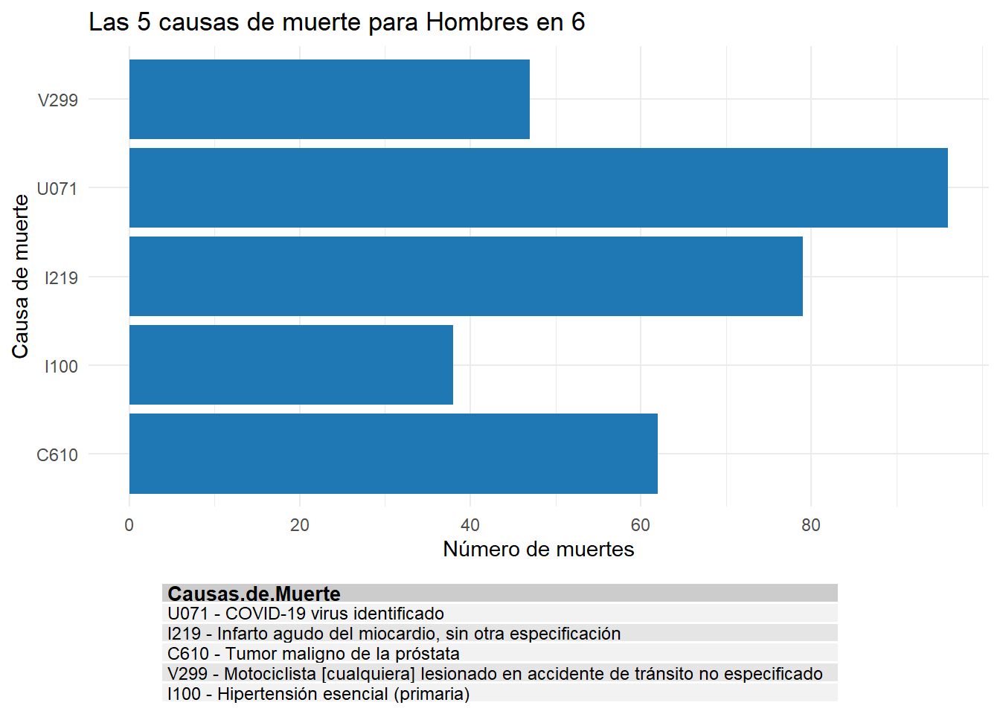
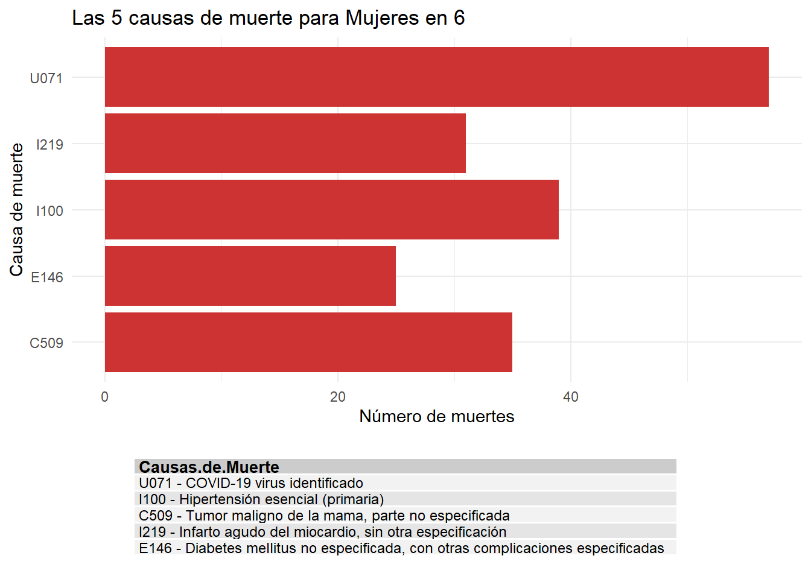
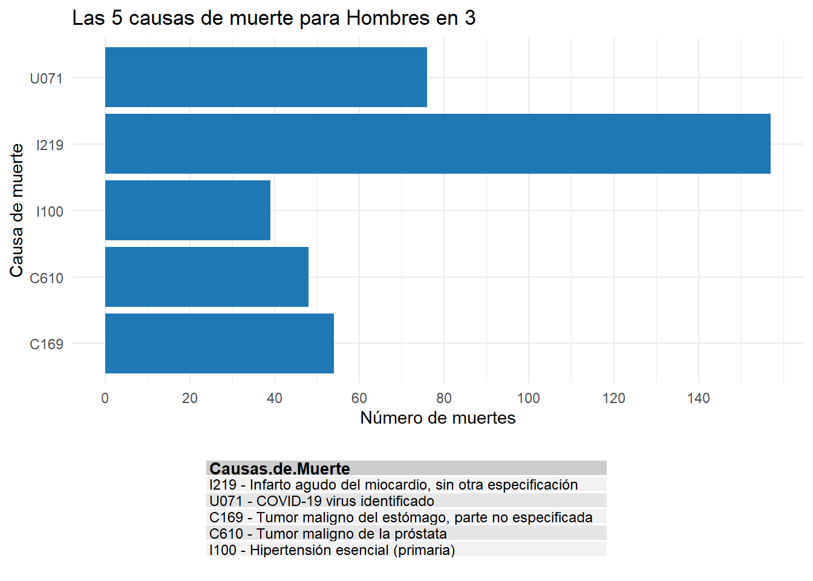
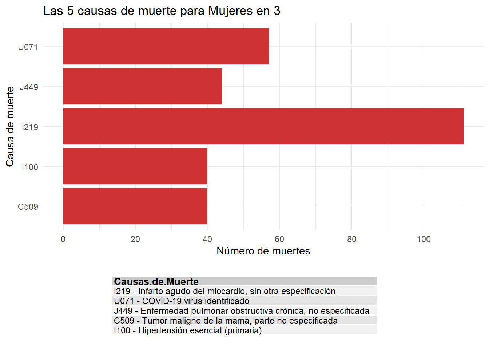
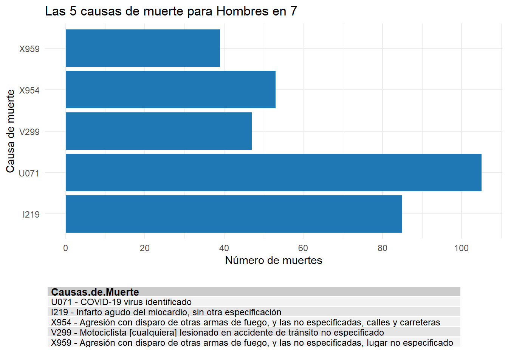
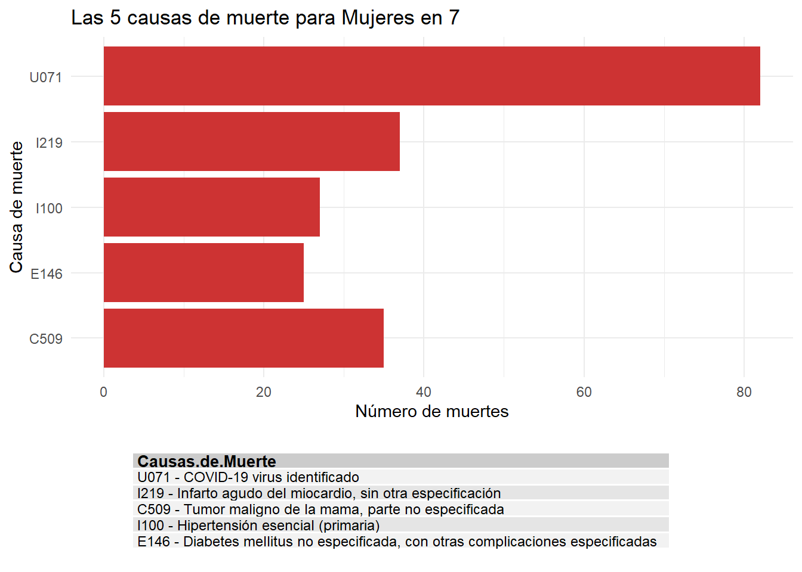
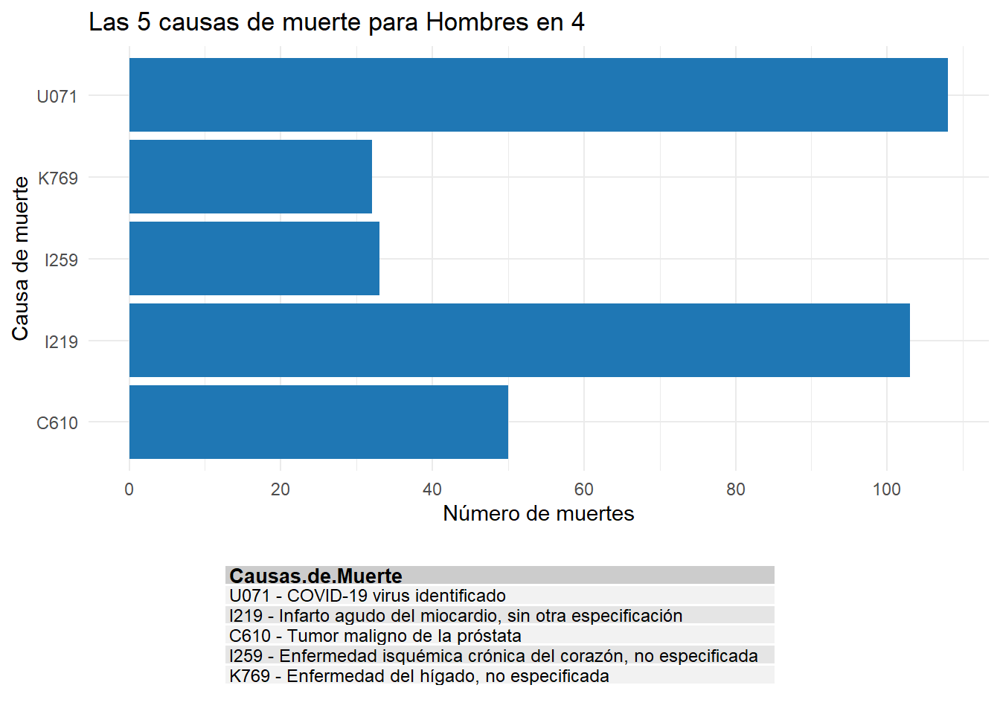
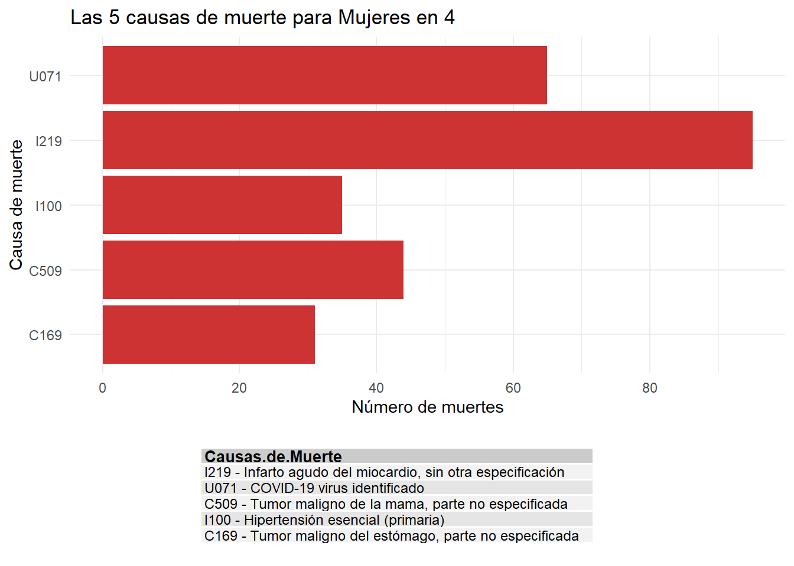
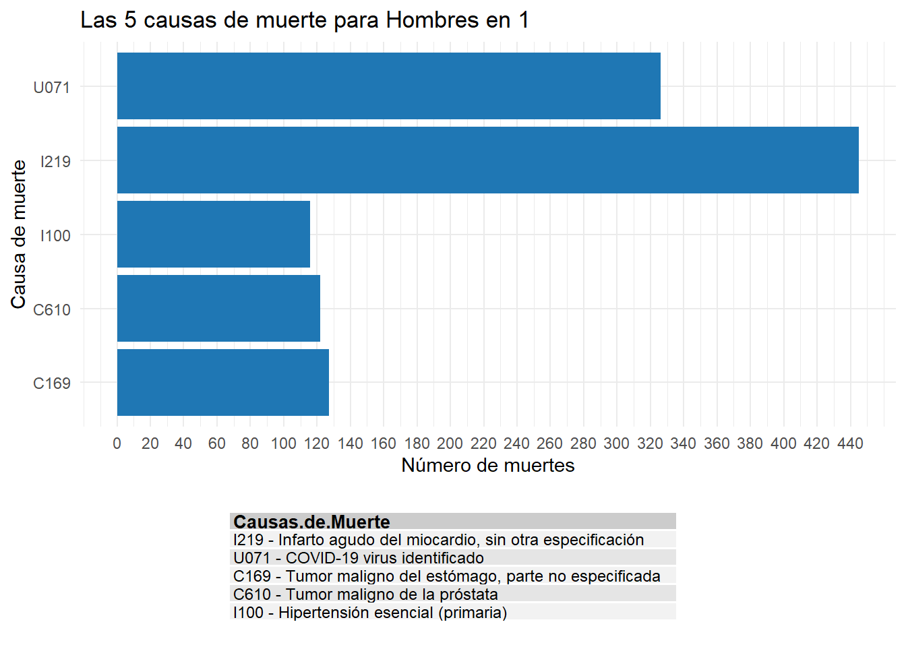
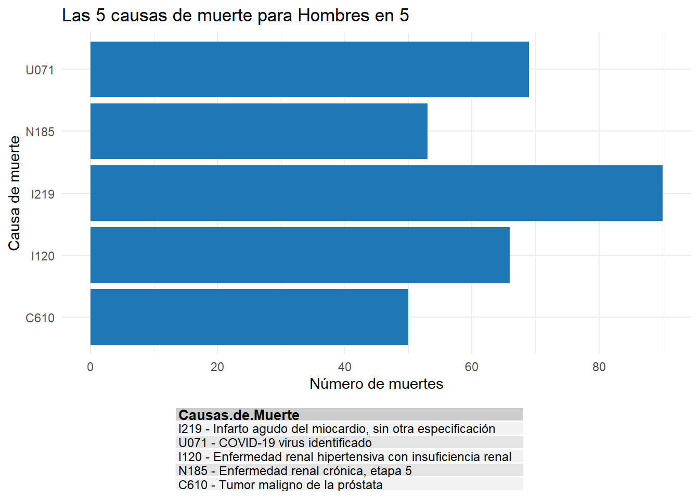
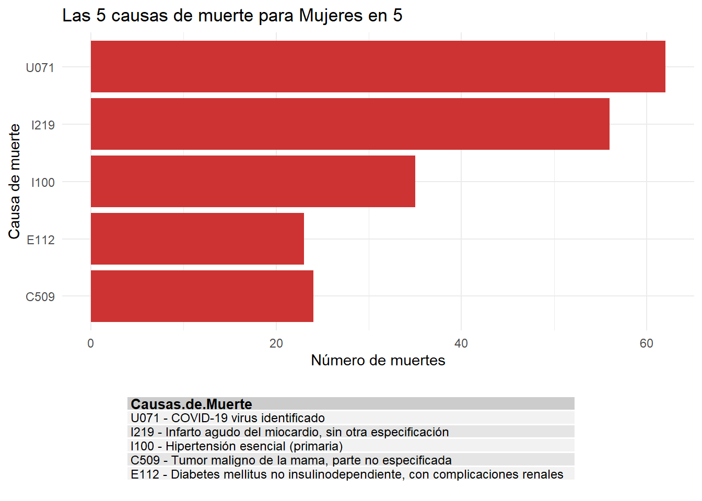
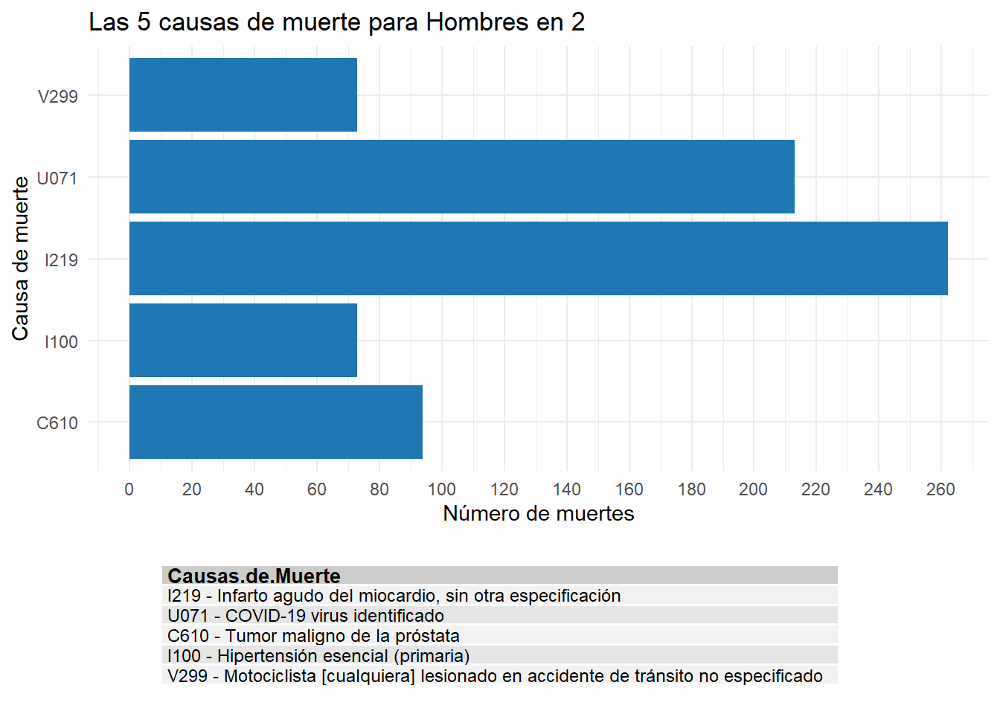
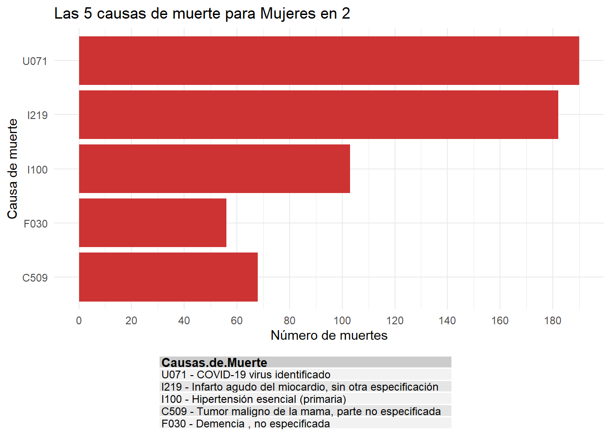
# defunciones por provincias y sexo de manera anualmuertes_privincia <- datos_filtrados %>%group_by(provincia, sexo, causamuer) %>%summarise(total_nuertes =n(), .groups ="drop")
nombres_meses <-c("Enero", "Febrero", "Marzo", "Abril", "Mayo", "Junio", "Julio", "Agosto", "Septiembre", "Octubre", "Noviembre", "Diciembre")# analisis mensual, por medio del mes.resultados_mensuales <- datos_filtrados %>%group_by(mesdef, sexo, causamuer, des_causa) %>%summarise(total_muertes =n(), .groups ="drop") %>%group_by(mesdef, sexo) %>%arrange(mesdef, sexo, desc(total_muertes)) %>%slice_head(n =5) %>%ungroup() %>%mutate(sexo =case_when( sexo ==1~"Hombre", sexo ==2~"Mujer",TRUE~as.character(sexo) ),mes =factor(nombres_meses[mesdef], levels = nombres_meses) )
#Gráfica por mes, de la cantidad de defunciones de hombres y mujeres.ggplot(resultados_mensuales, aes(x = mes, y = total_muertes, fill = sexo)) +geom_bar(stat ="identity", position ="dodge") +labs(title ="Total de muertes por mes y sexo",x ="Mes",y ="Total de muertes",fill ="sexo" ) +scale_fill_manual(values =c("Hombre"="#1f77b4", "Mujer"="#CD3333", "Otro"="red")) +theme_minimal() +theme(axis.text.x =element_text(angle =90, hjust =1), # se tomó la decisión de poner los nombres de los meses, si el ángulo es de 45 la lectura es borrosa, si es de 0, algunos se solapan, entonces se puso un ángulo de 90plot.title =element_text(hjust =0.5, face ="bold") )
# Vamos a buscar las principales causas de muerte por provincia muertes_5_causas <- datos_filtrados %>%group_by(provincia, sexo, causamuer, des_causa) %>%summarise(total =n(), .groups ="drop") %>%arrange(provincia, sexo, desc(total)) %>%group_by(provincia, sexo) %>%slice_head(n =5) %>%ungroup()# Buscamos el promedio de las edades por las diferentes causas de muerte de cada provincia promedio_edad_causas <- datos_filtrados %>%inner_join(muertes_5_causas %>%select(provincia, sexo, causamuer), by =c("provincia", "sexo", "causamuer")) %>%group_by(provincia, sexo, causamuer, des_causa) %>%summarise(promedio_edad =mean(edads, na.rm =TRUE), n_casos =n(),.groups ='drop' ) %>%mutate(sexo =case_when( sexo ==1~"Hombre", sexo ==2~"Mujer",TRUE~as.character(sexo) ))
#se va a crear una grafica interactivagrafica_interactiva <- promedio_edad_causas %>%mutate(etiqueta =paste("Provincia:", provincia, "\n","Causa:", des_causa, "\n", "Sexo:", sexo, "\n","Edad promedio:", round(promedio_edad, 1), "\n","Casos:", n_casos )) %>%ggplot(aes(x = promedio_edad, y =fct_reorder(causamuer, promedio_edad), text = etiqueta)) +geom_point(aes(size = n_casos, color = sexo), alpha =0.7) +facet_grid(provincia ~ ., scales ="free_y", space ="free_y") +labs(title ="Promedio de edad y frecuencia de las principales causas de muerte",x ="Edad promedio",y ="Causa de muerte",size ="Número de casos",color ="Sexo" ) +theme_minimal() +scale_color_manual(values =c("Hombre"="#1f77b4", "Mujer"="#ff7f0e")) +theme(strip.text.y =element_text(angle =0, size =8),axis.text.y =element_text(size =7) )# Convertir a interactivoggplotly(grafica_interactiva, tooltip ="text")
# Se va a generar un resumen sobre el promedio de edadresumen_edad_promedio <- promedio_edad_causas %>%select(provincia, sexo, des_causa, promedio_edad, n_casos) %>%arrange(provincia, sexo, desc(promedio_edad)) %>%rename(Provincia = provincia,Sexo = sexo,"Causa de muerte"= des_causa,"Promedio de edad"= promedio_edad,"Número de casos"= n_casos )#se va a generar una tabla resumen_edad <- resumen_edad_promedio %>%group_by(Provincia, Sexo) %>%summarise(`Promedio general de edad`=round(mean(`Promedio de edad`), 1),`Causa con mayor promedio`=first(`Causa de muerte`),`Mayor promedio de edad`=round(first(`Promedio de edad`), 1),`Total causas analizadas`=n(),.groups ="drop" ) %>%arrange(Provincia, Sexo)# resumen de edad promedio print(resumen_edad)
# A tibble: 14 × 6
Provincia Sexo `Promedio general de edad` `Causa con mayor promedio`
<dbl+lbl> <chr> <dbl> <chr+lbl>
1 1 [San José] Hombre 74.5 C610 - Tumor maligno de la …
2 1 [San José] Mujer 78.8 F030 - Demencia , no especi…
3 2 [Alajuela] Hombre 67.9 C610 - Tumor maligno de la …
4 2 [Alajuela] Mujer 83.6 I100 - Hipertensión esencia…
5 3 [Cartago] Hombre 74.9 C610 - Tumor maligno de la …
6 3 [Cartago] Mujer 75.3 J449 - Enfermedad pulmonar …
7 4 [Heredia] Hombre 74 C610 - Tumor maligno de la …
8 4 [Heredia] Mujer 73.1 I100 - Hipertensión esencia…
9 5 [Guanacaste] Hombre 77.4 U071 - COVID-19 virus ident…
10 5 [Guanacaste] Mujer 77.9 I219 - Infarto agudo del mi…
11 6 [Puntarenas] Hombre 65.9 C610 - Tumor maligno de la …
12 6 [Puntarenas] Mujer 74.9 I100 - Hipertensión esencia…
13 7 [Limón] Hombre 52.7 I219 - Infarto agudo del mi…
14 7 [Limón] Mujer 79.6 E146 - Diabetes mellitus no…
# ℹ 2 more variables: `Mayor promedio de edad` <dbl>,
# `Total causas analizadas` <int>
#Analisis por cantonesdatos_cantones <- datos_filtrados$pc # se va a extraer el código de los cantones datos_cantones <-as.data.frame(datos_cantones) # Se va a convertir los códigos de los cantones en una data frame#Se va a realizar el mapeo de los códigos de cantones con el nombre correspondiente a cada uno canton_nombres <-data.frame(pc =c(706, 705, 704, 703, 702, 701, 613, 612, 611, 610, 609, 608, 607, 606, 605, 604, 603, 602, 601, 511, 510, 509, 508, 507, 506, 505, 504, 503, 502, 501, 410, 409, 408, 407, 406, 405, 404, 403, 402, 401, 308, 307, 306, 305, 304, 303, 302, 301, 216, 215, 214, 213, 212, 211, 210, 209, 208, 207, 206, 205, 204, 203, 202, 201, 120, 119, 118, 117, 116, 115, 114, 113, 112, 111, 110, 109, 108, 107, 106, 105, 104, 103, 102, 101),nombre_canton =c("Guácimo", "Matina", "Talamanca", "Siquirres", "Pococí", "Limón", "Puerto Jiménez", "Monteverde", "Garabito", "Corredores", "Parrita", "Coto Brus", "Golfito", "Quepos", "Osa", "Montes de Oro", "Buenos Aires", "Esparza", "Puntarenas", "Hojancha", "La Cruz", "Nandayure", "Tilarán", "Abangares", "Cañas", "Carrillo", "Bagaces", "Santa Cruz", "Nicoya", "Liberia", "Sarapiquí", "San Pablo", "Flores", "Belén", "San Isidro", "San Rafael", "Santa Bárbara", "Santo Domingo", "Barva", "Heredia", "El Guarco", "Oreamuno", "Alvarado", "Turrialba", "Jiménez", "La Unión", "Paraíso", "Cartago", "Río Cuarto", "Guatuso", "Los Chiles", "Upala", "Sarchí", "Zarcero", "San Carlos", "Orotina", "Poás", "Palmares", "Naranjo", "Atenas", "San Mateo", "Grecia", "San Ramón", "Alajuela", "León Cortés Castro", "Pérez Zeledón", "Curridabat", "Dota", "Turrubares", "Montes de Oca", "Moravia", "Tibás", "Acosta", "Vázquez de Coronado", "Alajuelita", "Santa Ana", "Goicoechea", "Mora", "Aserrí", "Tarrazú", "Puriscal", "Desamparados", "Escazú", "San José"))muertes_por_canton <- datos_filtrados %>%mutate(sexo =as.character(sexo)) %>%#Se convierte la variable sexo a caráctergroup_by(provincia, pc, mesdef, sexo, causamuer, des_causa) %>%summarise(total_muertes =n(), .groups ="drop") %>%group_by(pc, mesdef, sexo) %>%arrange(pc, mesdef, sexo, desc(total_muertes)) %>%slice_head(n =5) %>%ungroup() %>%left_join(canton_nombres, by ="pc") %>%# Se añade nombres a cada cantón mutate(sexo =case_when( sexo ==1~"Hombre", sexo ==2~"Mujer",TRUE~as.character(sexo) ),mes =factor(nombres_meses[mesdef], levels = nombres_meses) # Pasa de número a nombre cada mes )
# Conteo por cantón y sexo conteo_sexo_canton <- muertes_por_canton %>%mutate(sexo =case_when( sexo ==1~"Hombre", sexo ==2~"Mujer",TRUE~as.character(sexo) )) %>%group_by(pc, sexo, causamuer, des_causa) %>%summarise(total_muertes =n(), .groups ="drop") %>%left_join(canton_nombres, by ="pc") %>%select(sexo, nombre_canton, causamuer, des_causa, total_muertes) %>%arrange(nombre_canton, sexo)# Ver la tabla resultanteprint(conteo_sexo_canton)
# A tibble: 6,053 × 5
sexo nombre_canton causamuer des_causa total_muertes
<chr> <chr> <chr+lbl> <chr+lbl> <int>
1 Hombre Abangares B205 B205 - Enfermedad por VIH, resu… 1
2 Hombre Abangares B238 B238 - Enfermedad por VIH, resu… 1
3 Hombre Abangares C069 C069 - Tumor maligno de la boca… 2
4 Hombre Abangares C169 C169 - Tumor maligno del estóma… 3
5 Hombre Abangares C189 C189 - Tumor maligno del colon,… 1
6 Hombre Abangares C200 C200 - Tumor maligno del recto 2
7 Hombre Abangares C220 C220 - Carcinoma de células hep… 1
8 Hombre Abangares C229 C229 - Tumor maligno del hígado… 1
9 Hombre Abangares C439 C439 - Melanoma maligno de piel… 1
10 Hombre Abangares C446 C446 - Tumor maligno de la piel… 1
# ℹ 6,043 more rows
# Tabla distribuida por los cantones y el total de muertes tanto de hombres como mujeres por cantón total_defunciones_canton <- muertes_por_canton %>%mutate(sexo =case_when( sexo ==1~"Hombre", sexo ==2~"Mujer",TRUE~as.character(sexo) )) %>%group_by(pc, sexo) %>%summarise(total_muertes =n(), .groups ="drop") %>%left_join(canton_nombres, by ="pc") %>%select(nombre_canton, sexo, total_muertes) %>%pivot_wider(names_from = sexo, values_from = total_muertes, values_fill =0) %>%arrange(nombre_canton)print(total_defunciones_canton)